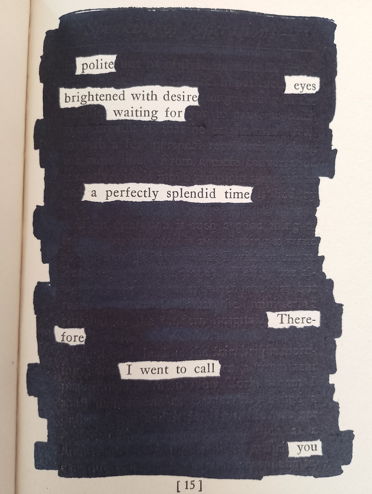

Yesterday I went shopping-for-books at the thrift store to try blackout poetry. I've extracted some poems since, and I want to share my two favourite ones so far. These are both from the book "Speaking of Operations" by Irvin S. Cobb, published in 1915.

